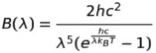

SIMULATION
INTERFERENCE EFFECT by GOLD NANOPARTICLES
Solar spectrum can be calculated with Plank’s law.
Where, B is energy[W/m3], λ is wave length, h is planck constant 6.626×10−34 [J*s], c is speed of light 2.998×108[m/s], kB is boltzmann constant 1.381×10-23[J/K], and T is temperature 5800[K]
These are results of the simulation. In our simulation, we assumed the attachment of gold nanoparticles below (Fig1). Solar altitudes between 45°and 75°are calculated because UV is the strongest at those altitudes.
We simulated the strength of solar light depending wavelength after considering interference effects created by the gold nanoparticles (Fig2). We can see that UV is greatly reduced while strength of visible lights is more than twice.
Compared with original solar spectrum, however, solar light is reduced excessively on all wavelength. There is little difference between strength of UV and visible light. (Fig3)
It might be impossible that we get strong wavelength dependence, but at least we can cut over 90 % of UV.
ATTACHMENT and DETACHMENT of DNA SHEETS
In our project, we connected DNA origami to each other using two types of staple strands, one for the horizontal arrangement and the other for the vertical arrangement. These two strands have a different Tm value; the strand responsible for the horizontal arrangement has a Tm value of 71.8℃ while the strand for the vertical arrangement has a Tm value of 58.8℃. Tm value is the temperature at which half of DNA double helix dissociates into single strands. This means the rate of attachment for each side of the origami is different. Moreover, detachment of them can happen as well. For this reason, we cannot expect all the origami to assemble perfectly; there may be holes in our sheet. Therefore, it is necessary to simulate whether or how well the supposed structure is actually made.
Our simulation was made with the Random Function of Mathematica, changing the probability of conation for detachment.
Below is the simulation results (Fig4). We hypothesized two different detachment rates, high and low, and compared the number of the origami that formed a structure when 100 attachments or detachments occurred. The test was simulated 10 times for both detachment rates, and the average is shown in the graph. In the graph, ‘total’ is the number of origami included in the whole structure of the sheet, and ‘well assembled’ is the number of origami composing the largest rectangular area. The two figures show examples of the structures (Fig5-a,b).
a.
b.

Figure 5. DNA sheet structure when detachment rate is high (a) or low (b). The red frame indicates the largest rectangular area; defined as ‘well assembled’ structure.